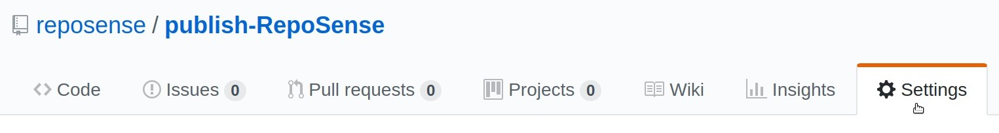

Using Travis to automate publishing of your report to GitHub Pages
Travis-CI enables you to automate RepoSense report generation and publish the report online to GitHub Pages for free.
- Fork publish-RepoSense repository using this link
- Follow this guide to generate a
Personal access tokenon GitHub for report publishing
Remember to copy it and you would only requirepublic_repopermission - Sign up and login to Travis-CI
- Go to your account, click on Sync account to fetch all your repositories into Travis-CI
- Go to your publish-RepoSense fork in Travis-CI, under Current tab click on Activate repository
- In the same page, click on More options on the right then access Settings

- Under Environment Variables, name a variable as
GITHUB_TOKENand paste thePersonal access tokento its value field; then click Add
Ensure that theDisplay value in build logis switched off for security reasons
- Edit run.sh, repo-config.csv and author-config.csv to customize the command line parameters or repositories to be analyzed
Read our User Guide for more information - To access your site, go to the settings of your fork in GitHub, under GitHub Pages section, look for
Your site is published at [LINK]
It should look something likehttps://[YOUR_GITHUB_ID].github.io/publish-RepoSense

The changes made to the configuration files should trigger Travis-CI to generate your report. Otherwise, follow the next section to manually trigger a build.
It takes a few minutes for report generation. Meanwhile, you can monitor the progress live at Travis-CI's Builds.
Try accessing your site again when a green tick appears beside your fork.
Keeping your site up-to-date with your code contribution
Travis-CI offers Cron Jobs in intervals of daily, weekly or monthly.
- Login to Travis-CI
- Go to your fork in Travis-CI, click on More options on the right then access Settings
- Under Cron Jobs, choose master for
Branch, Always run forOptionsand pick anIntervalof your choice;
then click Add
Alternatively, you can manually trigger an update.
- Go to your fork in Travis-CI, click on More options on the right then Trigger build
- In the pop up, click Trigger custom build
Specifying which version of RepoSense to use
As RepoSense is being actively developed, its master branch is frequently updated with new features and fixes.
For stablility or familiarity, you may want to use the release.
Use our latest release (Stable)
You can find the changelog of latest release here.
Edit line 10 of run.sh to use --release.
10 ./get-reposense.py --release
Use our master branch (Beta)
You can find the list of commits to master branch here and planned features/fixes here.
Edit line 10 of run.sh to use --master.
10 ./get-reposense.py --master
Use a specific version of release
Be sure to read and understand all breaking changes and bugs before proceeding.
Edit line 10 of run.sh to use --tag TAG, where TAG is the target version of release.
10 ./get-reposense.py --tag v1.6.1
Managing your configuration files with the help of collaborators
If you use RepoSense to monitor a large number of collaborators, it may be more systematic to have them update their git configurations into your fork using pull-requests.
To ensure that their pull-requests are correct, we can use Netlify to preview how the changes would look like in production, before deploying them into GitHub Pages.
- Sign up and login to Netlify
- Use this link to create a new site
- Select GitHub as your Git provider and authorize Netlify in the pop up if prompted
- If this is your first time using Netlify, pick
publish-RepoSensewhen prompted to install Netlify;
Otherwise, choosepublish-RepoSensewhen prompted to link a repository
If you can't find your fork, then Netlify may only have access to selective repositories
Click on the link inCan't see your repo here? Configure the Netlify app on GitHubto give Netlify access to your fork - In the next page, leave
masteras the Branch to deploy, enterpip install requests && ./run.shfor Build command andreposense-reportfor Publish directory - To save, click on Deploy site
- To test, go to an open pull-request, scroll down and in
All checks have passed, click on Details besidedeploy/netlify — Deploy preview ready!, and the report should open in a new tab